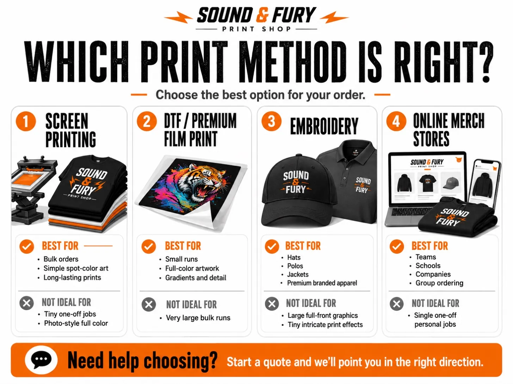

Screen Printing vs. DTF vs. Embroidery: Which Should You Choose?

Pick screen printing for larger runs and the lowest cost per piece on bold, simple designs. Pick DTF for small runs, photo-realistic art, and lots of colors with no screen fees. Pick embroidery for a premium, stitched look on hats, polos, and jackets. At Sound & Fury there are no minimums, so you can choose the method that fits the job, not the other way around.
It's the question we get more than any other: "What's the difference, and which one do I need?" All three methods put your design on apparel, but they get there in completely different ways, and each one has a sweet spot. Here's how we'd break it down if you were standing at our counter.
The Fast Comparison
| Screen Printing | DTF | Embroidery | |
|---|---|---|---|
| Best for | Bigger runs, bold designs, tees and hoodies | Small runs, full color, detailed art | Hats, polos, jackets, bags, a premium look |
| Quantity sweet spot | Larger orders | 1 to a couple dozen | Any quantity |
| Colors & detail | Best for 1 to a few solid colors | Unlimited colors, gradients, photos | Limited fine detail, thread colors |
| Durability | Excellent, can outlast the shirt | Very good with proper application | Excellent, lasts the life of the garment |
| Feel | Soft, prints into the fabric | Smooth film layer on top | Raised, textured stitching |
| Setup fees | Screen fees (free on 100+ and reorders) | No screen fees | One-time digitizing fee |
| Cost per piece | Lowest at higher quantities | Best value at low quantities | Mid to premium |
Screen Printing: The Workhorse
Screen printing pushes ink through a stencil (a "screen") onto the garment, one color at a time. It's the gold standard for apparel for a reason: the colors are bright, the prints are durable, and once the screens are made, every additional shirt is cheap. That's why the cost per piece drops fast as your quantity climbs.
It shines on bold, simple-to-medium designs in one to a few solid colors. There's a setup cost per color because each one needs its own screen, so it's less efficient for tiny orders or photo-realistic art with hundreds of colors. Good news: we waive screen fees on orders of 100+ pieces per design, and screens are always free on reorders. More on our screen printing.
DTF: The Small-Run, Full-Color Hero
DTF, which we call our Premium Film Print process, prints your design onto a special film and heat-presses it onto the garment. Because there are no screens to make, there are no setup fees, which makes it the best value for small orders. It also handles unlimited colors, gradients, and photo-level detail that screen printing can't touch affordably.
The trade-off is that the design sits as a thin layer on top of the fabric rather than printing into it, and it doesn't get cheaper at high volume the way screen printing does. If you need a dozen shirts with a detailed, multi-color logo, DTF is almost always the move. More on DTF and small runs.
Embroidery: The Premium Touch
Embroidery stitches your design directly into the fabric with thread. Nothing else says "quality" quite like it, which is why it's the go-to for hats, polos, button-downs, jackets, and bags, and anywhere your brand needs to look as sharp in a boardroom as it does at an event.
It's stitched, so it effectively lasts the life of the garment. The trade-offs: very fine detail and small text are harder to reproduce in thread, and there's a one-time digitizing fee to convert your art into a stitch file. For headwear and corporate wear, it's worth every penny. More on embroidery. (Not sure what blanks to put it on? Our guide to the best custom logo hats is a good start.)
How to Decide in 10 Seconds
- Small order with a colorful or detailed design? DTF.
- Bigger run of tees or hoodies with a bold design? Screen printing.
- Hats, polos, jackets, or a premium corporate look? Embroidery.
- Still not sure? Send us the art and the quantity. We'll tell you straight which method gives you the best result for the money.
That last point is the real advantage of working with an actual shop instead of an online portal: we'll steer you to the right process even when it's the cheaper one. And because we have no order minimums, you're never forced into a method just to hit a quantity.
Not Sure Which One You Need?
Send us your art and quantity. We'll recommend the right method and get you a fast, custom quote.
Get a Quote